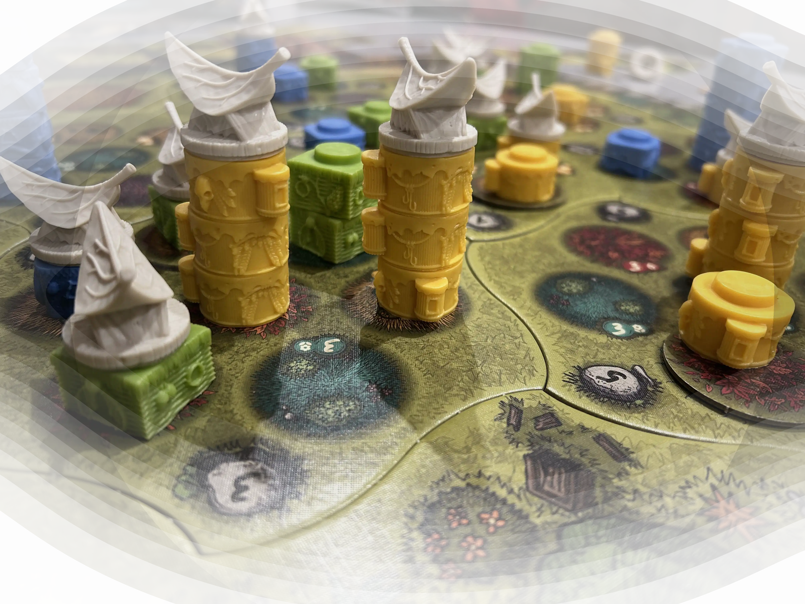

Unis par les dés. Animés par le jeu.
L'Arcane Vallérois
L'association l'Arcane Vallérois - Alchimie du Jeu promeut le jeu de société comme vecteur de lien social direct et outil de renforcement du tissu communautaire local.
Nous œuvrons à accroître la visibilité des jeux de société afin d'offrir une alternative enrichissante et un équilibre convivial face aux sollicitations numériques croissantes.

À Propos
Fondée en 2026 par Mme L, Mme. G et Mr B, l'association s'articule autour de l'appréciation du côté humain des jeux de plateau, lesquels sont reconnus pour être des catalyseurs d'interactions et pour affûter activement les compétences cognitives indispensables telles que la stratégie et l'anticipation. Le jeu représente un accès direct au développement du potentiel intellectuel.
Les jeux de sociétés sont bénéfiques chez les adultes et peuvent préserver la mémoire, ralentissant ainsi l'apparition de maladies comme Alzheimer. Ils peuvent également préserver de l'isolement que provoque certaines maladies comme la Sclérose en Plaque (SEP), une cause soutenue par Mme L (notamment via la SEPc). Ils ont aussi de nombreuses vertus pour les tout petits, ils permettent notamment de stimuler leur concentration et également de développer leur motricité fine.
L'association a été officiellement établie pour étendre cette démarche positive et déployer son action au sein du tissu de l'arrière-pays.
Ou nous trouver
Boite Aux Lettres : 91 chemin de la Calade, 06460 Saint-Vallier-de-Thiey
Prochain évènement
Chapelle Saint-Esprit : Rue de l'Hôpital, 06460 Saint-Vallier-de-Thiey
Afficher une carte plus grande